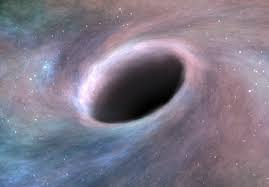
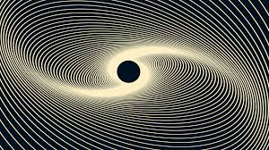
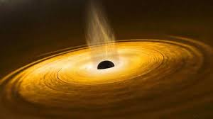

SPACETASTIC
SPACE IS
INTRODUCTION
A black hole is a region of very high gravity and density from which even light cannot escape so that is the reason why they are called black hole, because since it does not reflect the light so that we cannot see it.
HOW ARE BLACK HOLES FORMED?
Anything can form a black hole. For anything to become a black hole, it has to be compressed until the 99.99% empty space of all the atoms inside it gets filled, which means all the electrons will compress in its nucleus. We think that filling up such little empty space would have no effect on the size of the object. But its wrong. Radius of an atom is almost 105 (1 lakh) times bigger than the nucleus, it means electrons revolve around the nucleus at 1 lakh times more distance than the size of the nucleus. If we bring this comparison to human scale and then if we assume the nucleus size as 1cm, then electrons will be orbiting it from a distance of 1 km! Now by taking out the empty space from the human scale nucleus, the 1km sized atom will now be just be of 1cm! So now you can understand the value of the empty space of the atom. The size of the object till which it has to be compressed to form a black hole is called its 'Schwarzschild radius' , which is calcuated by the formula: \[r = \frac{2GM}{c^{2}}\] where r is the Schwarzschild radius of the object, G is the universal gravitional constant, M is the mass of the object, and c is the speed of light. By this, you can also calculate your own Schwarzschild radius!
The Schwarzschild radius of a normal human being is 2 trillion trillion trillion times smaller than a single grain of sand! You cannot even imagine this such smaller size, it's not just 2 trillion times, it is 2 trillion trillion trillion times! However, this black hole will last only some nanoseconds and disappear because of 'Hawking Radiation', which is the last topic in this article. If we want to make the whole Himalaya Mountain range a black hole then we have to compress it until it become the size of just five hydrogen atoms! If we want to make our Earth a black hole, then we have compress it until it becomes the size of a coin! If we want to make sun a black hole, then we have compress it until it becomes the size of some kilometers, however star like our sun cannot become a black hole, if you don't know the reason, then read our article, Full life cycle of a Star to know why our sun cannot become a black hole.
STRUCTURE OF BLACK HOLES
A black hole has mainly three parts:
- Singularity
- Event Horizon
- Accretion disk
1. SINGULARITY
Singularity is the center of the black hole. The full mass of the black hole is concentrated in this comparativly very small region. Like when I took the example of Himalayas, it's total mass is very large and this very large mass is concentrated in a very very small area of just five Hydrogen atoms! It has very high temperature because everything the black hole eats, comes here. However, Singularity is the most unknown and mysterious part of the black hole. Every black hole hava a Singularity.
2. EVENT HORIZON
Event Horizon is the circular part which separates the region outside the black hole and the region of Singularity. It is made of some matter which tried to enter the black hole but cannot enter and that's why they revolve around the Singularity. Event horizon is the part where once an object enters, it cannot go back again, not even light. That is why it's completely black inside the black hole. Black holes having very large mass only have Event Horizon because lighter black holes don't have much gravity to keep matter outside them revoling in an orbit.
3. ACCRETION DISK
Accretion disk is the matter revoling around the black hole and makes the black holes glow. Only the black holes having very high mass have Accretion disk. It is collection of various gases revoling around the black holes. It revolves very fast and that is why it's temperature is very high and due to this high temperature, it glows very very brightly. The special type of black hole which have very very very very bright accretion disk are called 'Quasar', a quasar is bright than our imagination. You can imagine the brightness of quasar by the fact that the nearest quasar to Earth is about 581 miliion light years away, but we cannot see it because it's light is 'Red Shifted'(I will also make article on Red Shifting of light soon). But if it's light is not red shifted, then it would lighten the entire night sky in our view! This is also a fact that the darkest thing in the universe makes the brightest of all things!
TYPES OF BLACK HOLES
There are mainly three types of black holes:
- Stellar black holes
- Intermediate black holes
- Supermassive black hole
1. STELLAR BLACK HOLES
These types of black holes are very common and we have little or no danger from them. When a star having 5 to 10 or more solar mass (1 solar mass = mass of our Sun example: 5 solar mass means 5 times the mass of our Sun.) goes under supernova explosion, it froms a Stellar black hole. If you don't know what is supernova explosion, read our article: Full Life Cycle of a Star.Therefore stellar black holes have a mass of approx 5 to 10 or more solar mass. They are very common, alone in our Milky Way Galaxy, there are about hundred million stellar black holes!
2. INTERMEDIATE BLACK HOLES
These types of black holes range in the mass 102 to 105 solar mass. They are thought to be formed from many steller black holes mixed together or large amount of other matter that came in gravitional contact with each other.
3. SUPERMASSIVE BLACK HOLES
Supermassive black holes are the monsters of the universe, there mass ranges from millions of solar masses and above! These black holes are responsible for the formation of galaxies. They attract billions of stars and solar system and make a galaxy. Therefore they are found in the centre of every galaxy. The supermassive black hole present in the centre of our galaxy is Sagittarius A* (pronounced as 'Sagittarius' A star but it is not a star) and it's mass is about 2.6 million solar mass! The largest black hole is 'TON 618', you will be shocked to know it's mass, that is, 66 billion solar mass! It's radius is 390 billion km, which is almost 40 times the radius of Neptune's orbit! You can have it's idea by the fact that even with the speed of light, it would take 7 days to travel from is one end to the other end! This is estimated to be formed by many indermediate and steller black holes which collided together.
DEATH OF BLACK HOLES
Earlier it was thought that black holes last forever and never ends, but scientist Mr. Stephen Hawking discovered that black holes also ends some day. It doesn't die by any outer sourcgy e or outer cause, instead it dies by it's own effect. It releases energy into outer space in form of radiation which is called Hawking radiation. Black holes vapourise their own matter in release it and if doesn't get enough matter to eat, it vanishes completely.
Hope you like this article, please comment below!!